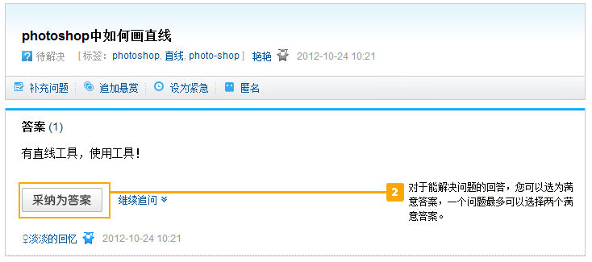
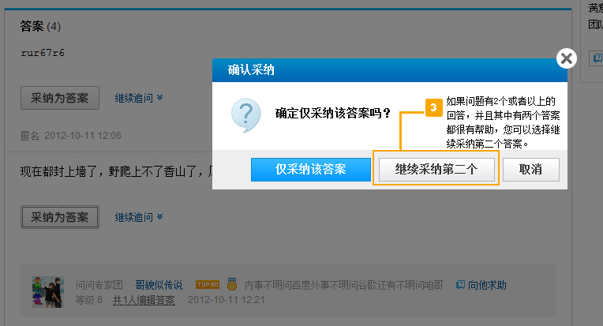
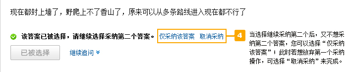
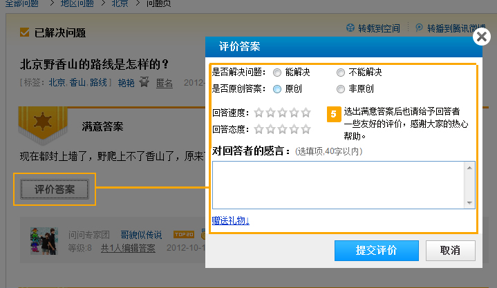

搜狗首页
>
帮助中心
> 问问帮助
<<
返回帮助中心
入门教程
•
什么是问问
•
新手学堂
提问攻略
•
如何提问
•
如何求助问友
•
如何收藏问题
•
怎样处理问题
•
为什么我的提问被删除了
•
提问被删除如何投诉
搜索攻略
•
如何使用搜索
•
搜索技巧
回答攻略
•
如何回答
•
为何我的回答被删了
•
回答被删除如何投诉
问问设置
•
如何点亮问问图标
•
关注领域设置
•
个人中心管理动态设置
•
如何设置toolbar的问问功能
•
为什么提问在QQ头像tips上显示
•
如何取消QQ头像上显示的问题
•
问问日刊订阅设置
•
如何接收短信通知
问问成长体系
•
社区成长体系
•
积分规则
•
经验值与用户等级
•
擅长领域与声望
•
问问管理员
•
问问团队
•
问问商城
•
问问专家
问问圈子
•
什么是问问圈子
•
申请加入圈子
•
进入我的圈子
•
圈主使用指南
•
圈子成员使用指南
•
圈子贡献分与积分
•
圈子等级���特权
•
圈子激励
•
圈子社区总规则
问问达人计划
检举攻略
•
如何检举
•
什么样的提问可以检举
•
什么样的回答可以检举
•
为何检举没被通过
作弊与惩罚
•
问问原则
•
作弊与处罚
•
为什么我的帐号被封了
•
帐号被封禁如何投诉
微博问答
•
如何使用微博问答
如以下信息仍然无法解决您的问题，请直接
给我们留言
怎样处理问题
处理问题时，您可以有如下选择：




© SOGOU - 京ICP证050897号